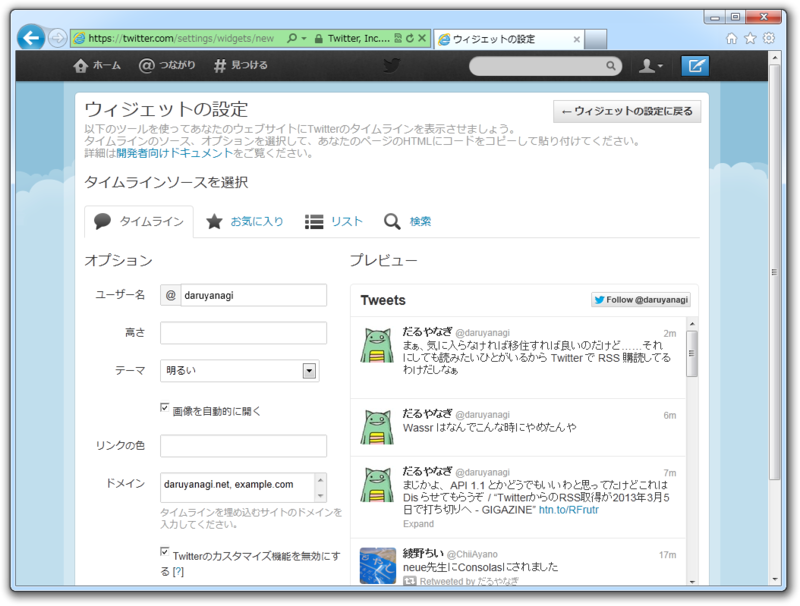
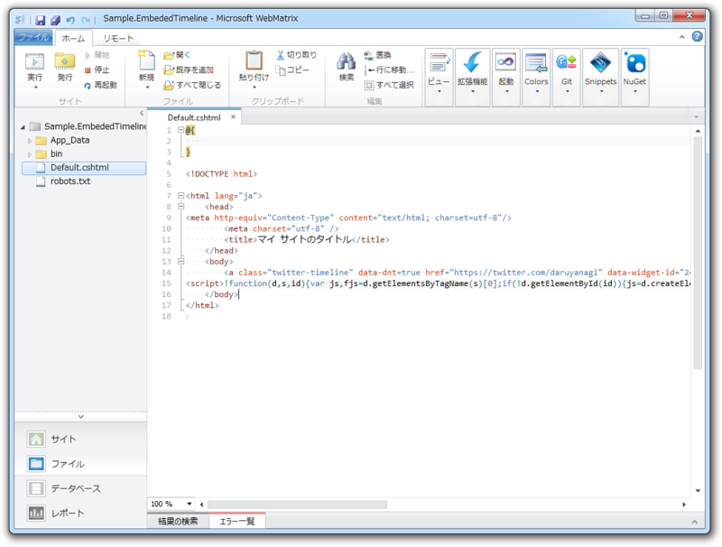
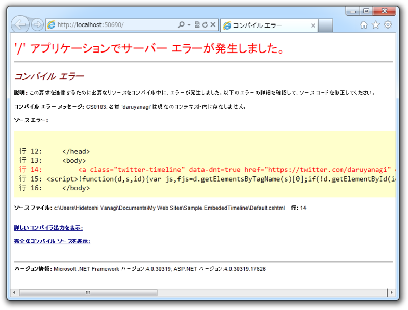
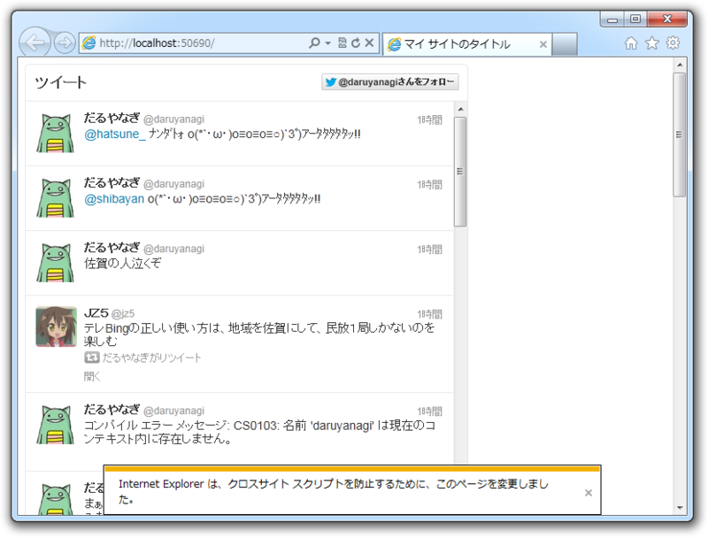

Twitter の埋め込みタイムラインを WebMatrix で利用する
公開日：

サイトの上に簡単にTwitterのタイムラインを表示できるツール「埋め込みタイムライン」の提供を始めました。ブログの隣に表示したり、＃ハッシュタグを使ったイベントのページに表示したり、スポーツの試合ページに参加選手のリストを使って選手のツイートを表示するなど、サイト上にリアルタイムのツイートを加えることができます。

さっそく WebMatrix 2 RC版（！）で試してみよう。Login on Twitter でウィジェットを作って cshtml へ貼り付けてみる。
ちょっとした注意

ガッデム／(^o^)＼
貼りつけたスクリプトに @ が含まれているときは注意だね。 Razor はこれを処理すべき変数・メソッドと解釈するので、当然エラーになる。 @ をそのまま出力したい場合は、
@@daruyanagi // -> "@daruyanagi"
と @ を重ねて書けばいい。
もちろんヘルパーにしてみる……
と思ったけれど、結局わざわざウィジェットページへ行かなければならないので、ヘルパーにしてもあまり美味しくないと思った。
# ~/App_Code/Twitter.EmbededTimeline.chtml@helper GetHtml( string id, string url, string text = null, int? width = null, int? height = null, string lang = null, string theme = null, string link_color = null, string[] related = null, string aria_polite = null) { if (string.IsNullOrEmpty(text)) { // URL を解析して適当なテキストを生成する処理 // たとえば、 // twitter.com/daruyanagi -> @daruyanagi からのツイート }
<a class="twitter-timeline" href="@url" data-widget-id="@id" data-theme="@theme" data-link-color=@link_color data-related="@string.Join(", @related)" data-aria-polite="@aria_polite" width="@width" height="@height" lang="@lang">@text</a> }
こんな感じで書いておいて、
<!DOCTYPE html> <html lang="ja"> <head> <meta http-equiv="Content-Type" content="text/html; charset=utf-8"/> <meta charset="utf-8" /> <title>マイ サイトのタイトル</title> // これを挿入しておく // Assets か RenderSection() でやるとよいけどこれはまた後ほど <script id="twitter-wjs" src="//platform.twitter.com/widgets.js"></script> </head> <body> @Twitter_EmbededTimeline.GetHtml( "244022447123333120", @"http://twitter.com/daruyanagi") @Twitter_EmbededTimeline.GetHtml( "244027379142492160", @"http://twitter.com/daruyanagi/favorites") @Twitter_EmbededTimeline.GetHtml( "244027809108987904", @"http://twitter.com/search?q=#corgi") </body> </html>
と使うんだけど、まぁ、結構微妙だよね。ウィジェット ID と URL の最低2つをコピってこなければならない。それだったら、何も考えずに*1吐かれた公式のコードを張ったほうがマシだ。

試しにウィジェット ID を使いまわしていろんなパラメーターを入れると、 IE がなにかお世話をしてくれるみたい。このメッセージは初めてみたかも。
おまけ
ちなみに Twitter.EmbededTimeline.chtml のクラス名は、 . が _ に置き換えられて Twitter_EmbededTimeline になる。Visual Studio なんかの IntelliSense でみてみればわかるけど、これはほかの WebPage クラス（cshtml ファイル）でも同じみたい。
@Twitter_EmbededTimeline.GetHtml()
これをちゃんと（？）
@Twitter.EmbededTimeline.GetHtml()
みたいに呼びたい場合は、 ~/App_Code/Twitter/EmbededTimeline.chtml ってな感じにサブフォルダーへ分けてしまえば OK 。一手間かかるからちょっと面倒だけどね。
<?xml version="1.0"?> <configuration> <system.web> <compilation> <codeSubDirectories> <add directoryName="Twitter"/> </codeSubDirectories> </compilation> </system.web> </configuration>
試してはないけど、こんな感じで動くんじゃないかな。
*1:@ のエスケープはしなきゃだけど